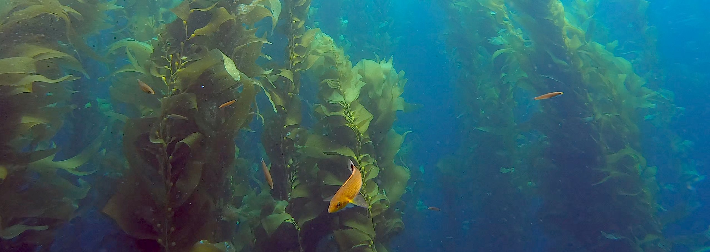

Click here to download
my CV | For publications, click here
Education
San Diego State University
2015 - 2018 Master of Science in Biology (focus in ecology)
Advisor: Dr. Matthew Edwards
Thesis: Speaking for the Understory: Quantifying the Loss of
Benthic Production on Temperate Rocky Reefs
University of California Santa Cruz
2008 - 2012 Bachelor of Science in Marine Biology
Undergraduate advisors: Drs. Pete Raimondi, Mark Carr, Giacomo
Bernardi
Thesis: Sand scour affects the distribution of subtidal barnacle
on rocky reefs at Hopkins Marine Station
Professional Experience
Marine Scientist - NOAA Olympic Coast National Marine Sanctuary
2022 - Present
- Facilitate and support moorings operations within Olympic Islands
NMS
- Facilitate and support other sanctuary research initiatives
- Support sanctuary planning and logistics
- Technical report writing
- Data collection, curation, visualization, and database
management
- Creation and curation of Web-enabled Condition Reports
Research Operations Specialist - Cardinal Point Captains Inc.
2020 - 2021
- Contractor with Channel Islands National Marine Sanctuary
- Facilitated and support research operations for Channel Islands
NMS
- Technical report writing
- Contributed to the publication of scientific papers
- Data collection, curation, and database management
- Creation and curation of Web-enabled Condition Report
California Sea Grant State Fellow
2019 - 2020
- Post-graduate agency fellow with Channel Islands National Marine
Sanctuary
- Supported Sanctuary outreach and education
- Supported and facilitate the Sanctuary Advisory Council
- Preliminary drafting of sanctuary management plans
NOAA Catch-Shares Fishery Observer - Alaska Observers Inc.
2013 - 2014
- West Coast Groundfish Fishery observer
- Identified, counted, and enumerated bycatch at sea on commercial
fishing vessels
- Monitored dockside offload of retained fishes
Research Experience
Field projects / expeditions
2010 - Present
- AAUS scientific diving:
- Subtidal projects across the Aleutian Archipelago; Channel Islands,
CA; Monterey, CA; San Diego, CA; Baja California, MX; Corsica, FR;
National Parks, various, US; Palos Verdes, CA
- Research cruises:
- Aleutian Archipelago (2016 - 2017), Bremerhaven, GR to Cape Town,
SA; Channel Islands (various, 2019-2021)
- Intertidal surveys:
- Olympic Coast National Marine Sanctuary, in partnership with MARINe
(2022)
- Laboratory experiments:
- Photosynthesis vs. Irradiance curves (2015 - 2018)
- Field qualifications:
- AAUS scientific diver; drysuit; Nitrox, decompression, NOAA
divemaster, PADI divemaster
- Motorboat operator (MOCC)
Graduate Research Assistant - San Diego State University
2016 - 2018
- Helped design and execute a subtidal experiment in kelp forests,
urchin barrens, and transitions zones spanning the Aleutian Archipelago
(2016-17)
- Contributed to the analysis of data collected from field and
ship-board experiments
- Contributed to the publication of this work
National Park Service dive intern - Our World Underwater Scholarship
Society®
Summer 2015
- Further developed SCUBA skill set (e.g, decompression diving,
drysuit etc.)
- Participated on research projects
- Served as a liaison between the across the National Park Service
public and Park Service staff system
Teaching Experience
Public speaking / science communication
2015 - Present
- Presentations at scientific conferences (see CV)
- Invited to give talks to adult learners / continued education about
marine flora and fauna
- Invited to give career talks to incoming undergraduates and
undergraduate seniors
- K-12 presentations at outreach/education events
Principles of Organismal Biology (lab) - San Diego State
University
2015 - 2018
- Instructor for organismal / evolutionary biology lab
- Wrote and administered lectures for undergradaute lab
- Provided instructional support for laboratory assignments
- Wrote, administered, and graded quizzes and exams
Tutor / supplemental educational support - UCSC Modified
Supplemental Instruction
2010 - 2012
- Provided one-on-on and group tutoring sessions for upper division
Ecology and Biology of Reefs, Mangroves, and Seagrasses courses
- Worked with professors to tailor tutoring sessions to student’s
needs
Mentorship
2016 - 2019
- Graduate
- Served as a mentor for undergraduates while at SDSU
- Trained undergraduate volunteers to conduct SCUBA surveys, help with
field and lab experiments, and grant writing
- Project Pegasus
- Lead a team of high school volunteers in the construction of a
remotely operated vehicle
- Mentored team members; assigned writing projects to develop ideas,
had team members contribute to weekly blog posts (see: Project Pegasus archives)
More resources:
Check out my
twitter feed for more sci-comm!
For code, projects, and repos, check out my Github
profile
For more information about my previous experience in graduate school,
check out Lower Case Science, my deprecated science
communication blog